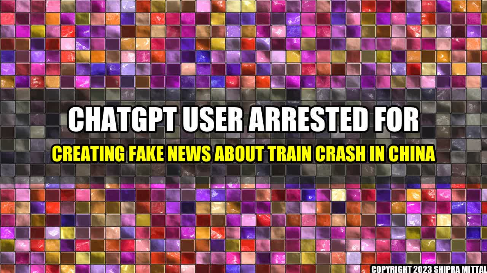

ChatGPT User Arrested for Creating Fake News about Train Crash in China

It was a typical Monday morning in China, when suddenly news spread like wildfire all over the social media platforms about a train crash that had occurred in the early hours of the day. The news was shocking and people were in a frenzy to know more about the details. They wanted to know how many people were dead, what caused the accident, who was responsible for it, and other such details that could satiate the curiosity of the public.
Like many people, a ChatGPT user also came across this news on his social media feed. Intrigued, he decided to create his version of the news, which he thought was more interesting than the original one. He added some twists and turns to the story, which eventually went viral. The story he created was so mesmerizing that it captured the attention of many people who believed that it was the real story. The ChatGPT user enjoyed his newfound fame for some time, until the authorities caught up with him and arrested him for creating fake news.
Why You Shouldn't Trust Fake News?
There are many reasons why you shouldn't trust fake news. Here are some reasons:
- It is Misleading: Fake News is intentionally created to mislead people. It is designed to trick people into believing something that is not true. This can lead to confusion, misinformation, and sometimes even harm to society.
- It is Destructive: Fake News can be destructive to society. It can create a sense of panic, fear, and uncertainty, leading to social unrest and chaos. It can also create negative sentiments, hatred, and polarization among people, leading to violence and other forms of aggression.
- It is Unethical: Creating fake news is an unethical practice. It goes against the principles of journalism and media ethics. It is a violation of people's trust and can lead to a loss of credibility for the media as a whole.
These are just some of the reasons why you should be wary of fake news.
How Fake News Can Affect Society?
Fake News can have a profound impact on society. Here are some examples of how it can affect society:
- It can create a Sense of Fear and Panic: Fake News can spread quickly and create a sense of fear and panic among people. This can lead to social unrest and chaos, and can even cause people to take irrational actions.
- It can create Negative Sentiments among People: Fake News can create negative sentiments among people. It can create divisions, hatred, and polarization among different groups, leading to conflict and violence.
- It can Hinder Societal Progress: Fake News can hinder societal progress. It can prevent people from making informed decisions, and can prevent governments and organizations from implementing effective policies and strategies.
- It can Damage the Reputation of Individuals and Organizations: Fake News can damage the reputation of individuals and organizations. It can create false impressions about them, and lead to a loss of trust and credibility.
These are just some of the ways in which fake news can affect society as a whole.
Conclusion
- Fake news can be incredibly harmful to society.
- It is our responsibility to ensure that we do not spread fake news or believe in everything that we come across on social media.
- Journalism and media organizations also have a responsibility to ensure that they verify their stories and publish only accurate and truthful information.
"The power of the media is immense, and it is important that we use it to create positive change, rather than to spread fear, hate, and misinformation."
Akash Mittal Tech Article
Share on Twitter Share on LinkedIn